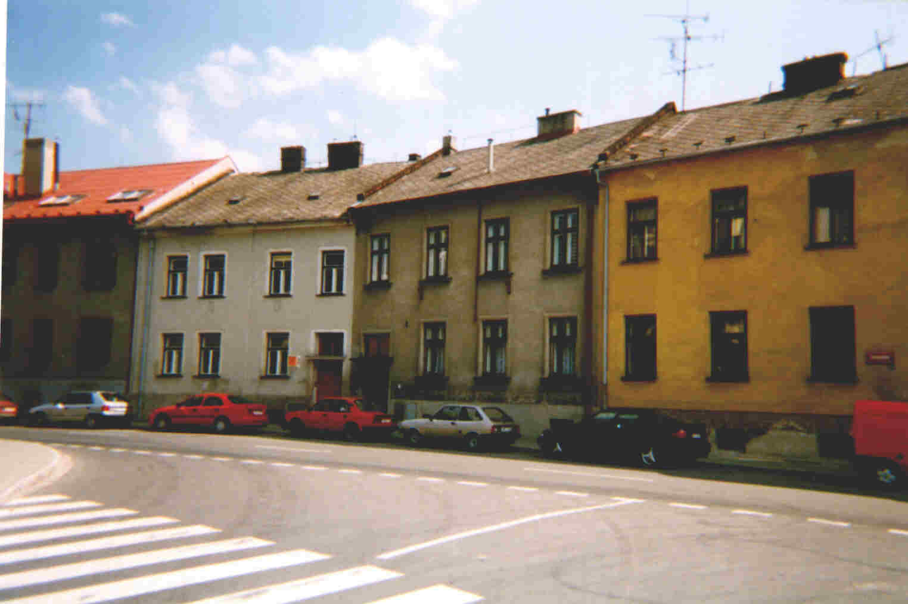
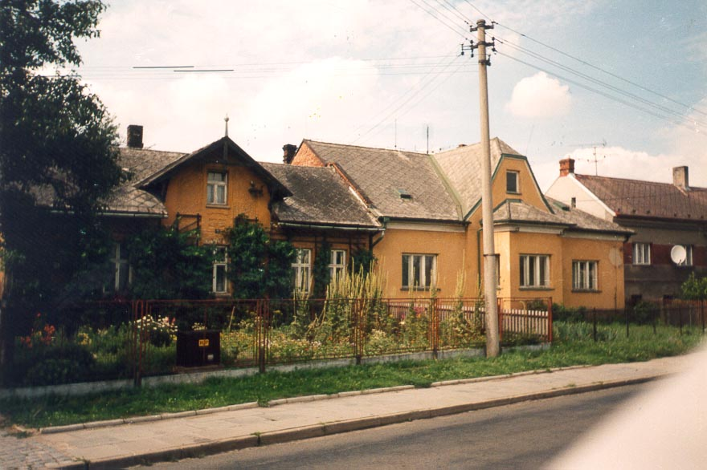
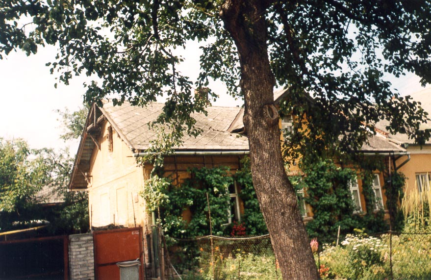
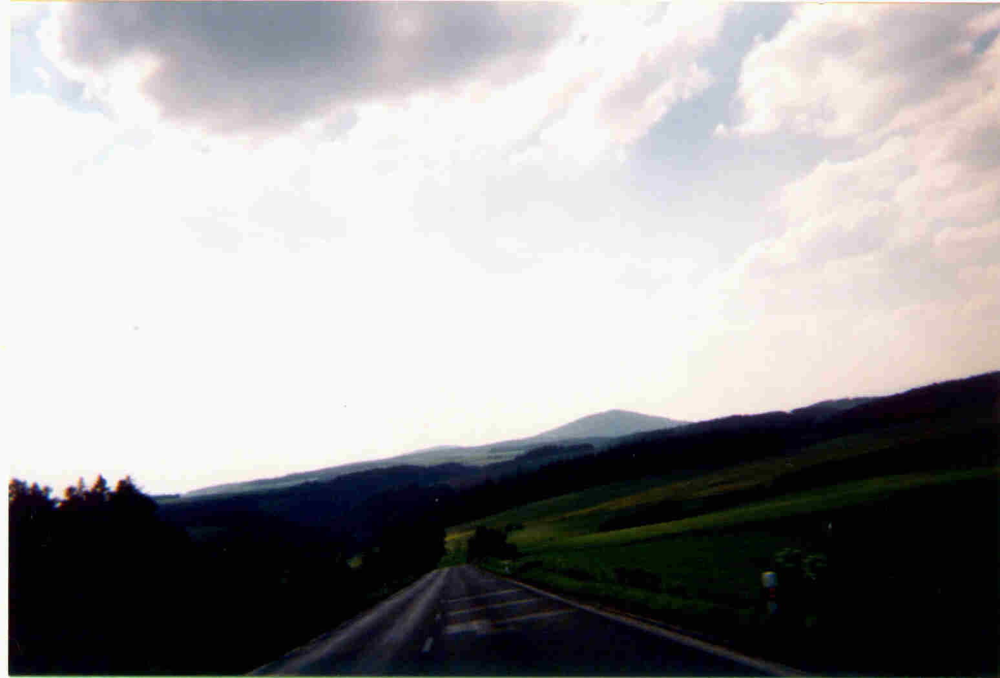
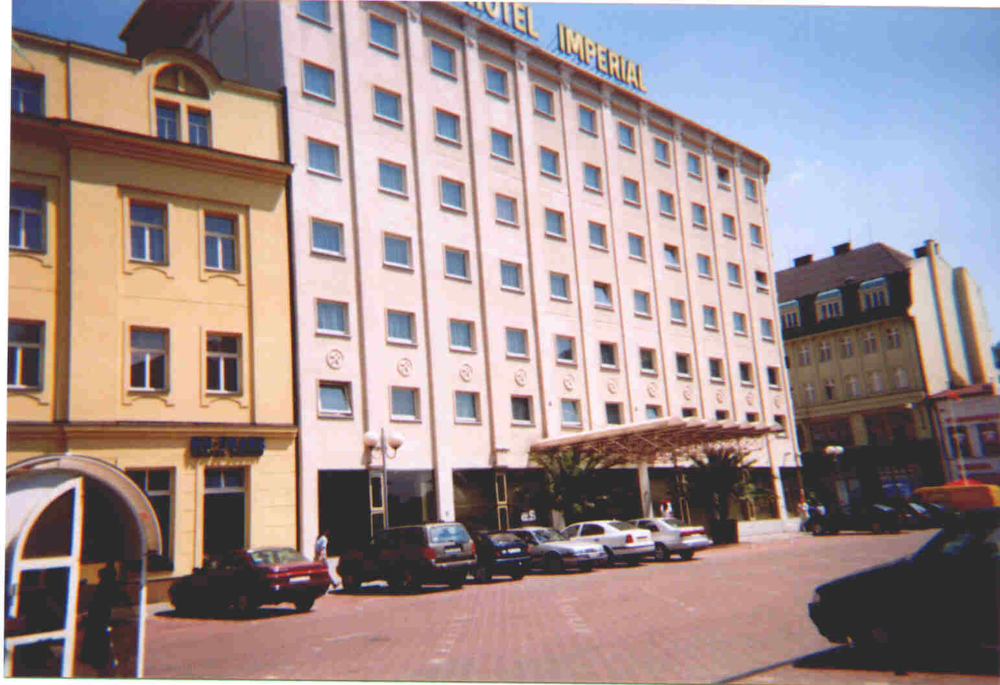
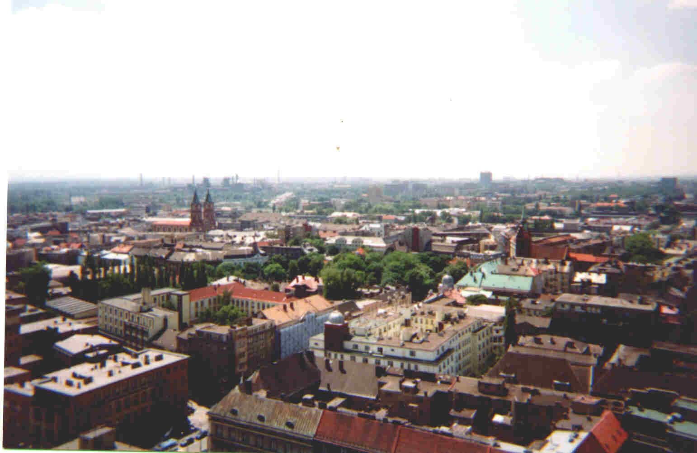

(September
1999)
2 photos taken by MC from Opava have been added to this report. Furthermore a number of errors contained in the original report have been corrected by MC and further interesting details about the pictures were added.
As you can guess that in the apartments live new tenants it's important to understand, that these people don't like any visits by Bardon enthusiasts. (September 2000, Paul Allen)
Annotation by PA:
this article has been sent to me by a person who wants to remain unknown to
the public.
September 1999.
As I began my quest on the spiritual path I found besides many other sources also the work of Franz Bardon. Bardon is still a most respected source for my personal Philosophy even if I see myself more on the shamanistic path which I use to help mankind and to make further progress.
But the work of FB had a significant impact on my own development.As I'm always trying to research also the origins of all matters so it was obviously also the case with FB.
Some time ago I decided therefore to wander in the footsteps of FB.
I went to Prague, Ostrava and Troppau/Opava and I was impressed about how much I was able to see and to know about.
To check the influence of F:B. more in depth I used my abilities and was able to meet soon an old man who spoke German to me and began to tell me about FB without stopping his speech for a long time.
In the midst of his tales the man suddenly stopped and asked me: "Is this you, Franz"? First I was shocked, but then we began both to giggle. He continued: "Franz has been doing all the time so unbelievable things, so eventually it was a reasonable possibility !" and I agreed.
This is only a minimal part of what I was experiencing on this journey.
I have not the time to write down a detailed report of my journey but I send with this email some photos of it to you as my contribution and thanks for the great work.
On picture 1 you can see the house where Franz Bardon had his study and where he received his patients, clients and other visitors. It's located near the center of Opava (Czech Republic, Europe), the second building to the right of the picture, first floor.

(Picture 1, 1999)
On the picture 2 and 3 you can see the house where Franz Bardon lived with his wife Marie. She continued to stay there until she died in 1998. It is situated in the Kylesovice district of Opava, opposite to the cemetery where Franz Bardon's tomb is located (click on the link to see the pictures of Franz Bardon's tomb). Some time ago it was still a little village on his own. (Photos by MC, 1999)
The house where Franz Bardon was born in Opava-Katerinky doesn't exist anymore. There reside now new buildings. Bardon lived for a short time also in the nearings of the hospital in the center of Opava, where he was employed shortly as an administrator. The parents of Franz Bardon lived in another house in Opava which possibly still exists today.

(Picture 2, 1999)

(Picture 3, 1999)
On the 4th picture you can see (more or less) the landscape where FB practiced his magical evocations.

(Picture 4, 1999)
Photo 5: Everyone who has read Frabato knows what happened at the Hotel Imperial.

(Picture 5, 1999)
Picture 6 shows a panorama of Ostrava.

(Picture
6, 1999)
I wish you all a steady progress and the deepest insights.
I send my thoughts and best wishes to all students of Franz Bardon.

 8' ALT="Click Here!" BORDER="0">
8' ALT="Click Here!" BORDER="0">